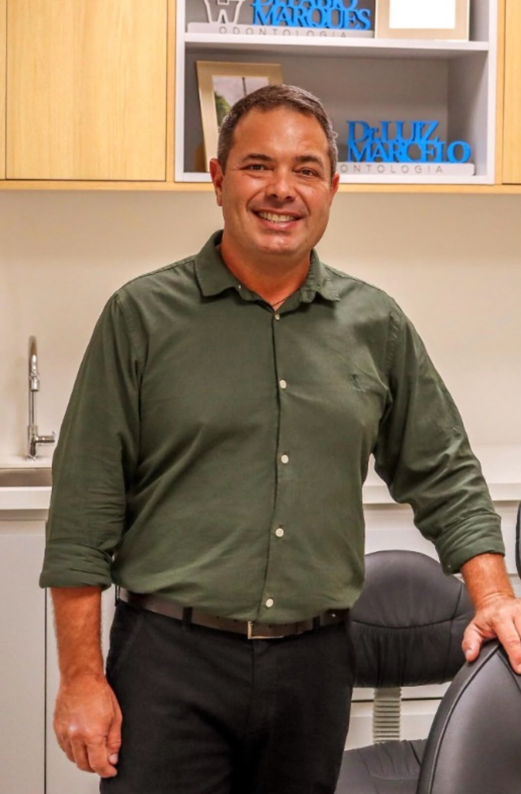

Clareamento
Feito depois de avaliar o esmalte e a sensibilidade dos seus dentes, buscando o tom possível para o seu caso sem agredir a estrutura.
Odontologia integrada
Da primeira consulta ao acompanhamento, você entende cada etapa antes de decidir. Sem termo difícil e sem orçamento surpresa.
Sobre nós
Acreditamos que ir ao dentista deveria ser simples e confortável para você, porque sua saúde e sua confiança importam.
Somos um consultório de odontologia integrada. Isso quer dizer que as especialidades conversam entre si: o mesmo plano de tratamento passa pela prevenção, pela estética e pela função da sua mordida, sem que você precise recomeçar a história a cada consulta.
Conhecer a equipeNossos serviços
Do diagnóstico ao acabamento, as especialidades conversam entre si dentro de um mesmo plano de tratamento.
Feito depois de avaliar o esmalte e a sensibilidade dos seus dentes, buscando o tom possível para o seu caso sem agredir a estrutura.
Consultas de rotina, limpeza, restaurações e acompanhamento preventivo. É aqui que a maior parte dos problemas deixa de existir antes de aparecer.
Tratamento de canal com anestesia bem conduzida e sessões objetivas, para tirar a dor sem transformar isso num evento.
Indicada quando o dente não tem mais recuperação, sisos incluídos. Anestesia bem conduzida e orientação detalhada de pós-operatório.
Reconstrução da forma e da cor do dente em resina composta, moldada na própria consulta e ajustada junto com você.
Reposição de dentes perdidos com planejamento guiado por imagem, devolvendo mastigação e estabilidade à arcada.
Correção do posicionamento dos dentes e da mordida, com as etapas planejadas desde o início e ajustadas ao longo do tratamento.
Prótese total, prótese parcial removível e coroa total. A escolha parte do que ainda existe na arcada, considerando mastigação, fala e conforto no dia a dia.
Sedação consciente inalatória, indicada para quem tem medo na hora de realizar um procedimento. Você segue acordado e respondendo, com a respiração acompanhada do início ao fim.
Por que a MDP
Não é sobre ter mais aparelho na sala. É sobre a experiência inteira fazer sentido para quem senta na cadeira.
Agendar avaliaçãoProfissionais com formação continuada e atuação em cada área específica, para você ser atendido por quem domina o assunto.
Escaneamento digital, documentação por imagem e uma sala preparada para deixar cada procedimento mais preciso e confortável.
Você recebe as etapas, os prazos e os valores por escrito antes de começar. Nada de surpresa no meio do caminho.
Agenda organizada para reduzir espera, com horários estendidos e retorno acompanhado de perto pela mesma equipe.
Nossa equipe
Especialista em Ortodontia
CRO-RJ 25.959

Especialista em Implante Dentário
CRO-RJ 26.454
Clínica Geral, Especialista em Prótese Dentária. Facetas em resina e clareamento dentário.
CRO-RJ 46.415
Histórias reais
Avaliações publicadas por pacientes no Google. São experiências individuais — cada caso tem o seu próprio caminho.
Agendar avaliaçãoCheguei para um atendimento de emergência e não tenho palavras para descrever como fui atendida. Eu estava super nervosa, triste, preocupada e fui muito bem acolhida, acalentada e acalmada pela Dra Renata, ao final do atendimento eu estava feliz e sorridente. É uma profissional carinhosa, super competente, dedicada, detalhista, caprichosa e demonstra total conhecimento do procedimento que está executando, deixando o paciente confiante, calmo e totalmente entregue em suas mãos. Saí muito feliz e com os dentes mais bem finalizados, mais bem alinhados do que minha dentição original; super recomendo.
Fui muito feliz na escolha do Dr. Fábio como meu ortodontista! A clínica tem uma localização excelente, o ambiente é sempre limpo e agradável, e o atendimento é simplesmente impecável. O Dr. Fábio é extremamente atencioso, profissional e transmite muita confiança. Recomendo de olhos fechados!
Fiz uma limpeza, clareamento e resina composta em dois dentes para alinhar o sorriso. Fui atendido pela doutora Renata Patrão e a experiência foi a melhor possível, ela me ouviu quando eu achava que já era tarde pra mim, me passou confiança e esperança de que daria tudo certo e deu. Fiz todos os procedimentos e hoje tenho um sorriso mais bonito!!! Agradeço demais a doutora Renata por tudo.
Ambiente acolhedor com profissionais atenciosos que nos passam segurança quanto ao procedimento a ser realizado. Com certeza, recomendo.
Dúvidas frequentes
Para a maioria das pessoas, uma consulta a cada seis meses dá conta de acompanhar limpeza e prevenção. Quem tem histórico de cárie, gengivite ou usa aparelho pode precisar de intervalos mais curtos — isso a gente define junto na avaliação.
Sim, a avaliação tem um valor — mas ele não é cobrado se você fechar o tratamento com a gente. Na consulta nós examinamos, conversamos sobre o que você espera e montamos o plano por escrito, com etapas e prazos, sem compromisso de decidir na hora. Fale com a gente pelo WhatsApp para saber o valor e agendar.
A anestesia moderna e a técnica correta tornam a maior parte dos procedimentos confortável. Se você tem medo ou já teve uma experiência ruim, avise logo na chegada: nós ajustamos o ritmo, explicamos cada passo e paramos sempre que você pedir.
Trabalhamos com pagamento à vista, cartão e parcelamento. As condições variam conforme o tratamento e são apresentadas junto com o orçamento, antes de qualquer procedimento começar.
Atendemos particular e o convênio Amil Dental. Se o seu plano for outro, o tratamento pode ser feito como particular, com orçamento por escrito antes de começar. Para confirmar o que está coberto no seu caso, chame a gente no WhatsApp.
Agende sua avaliação e saia com um plano claro do que precisa ser feito, em que ordem e por quanto.